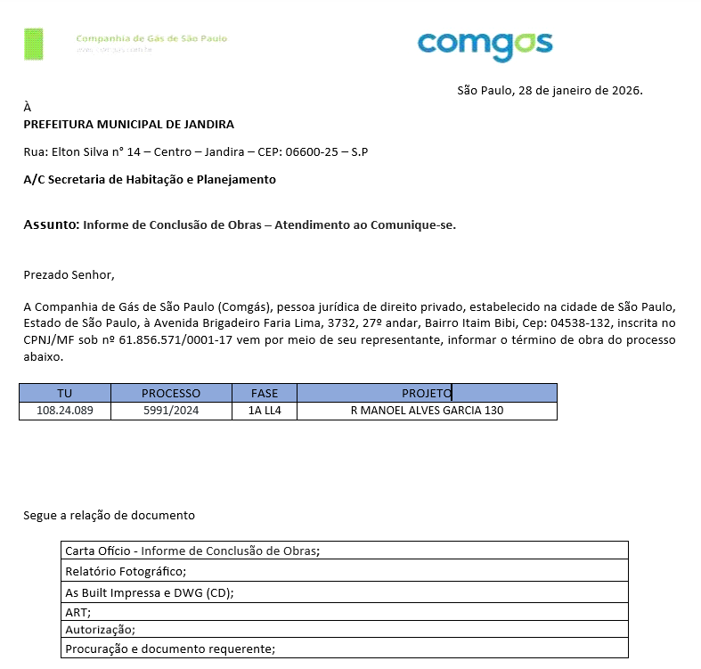
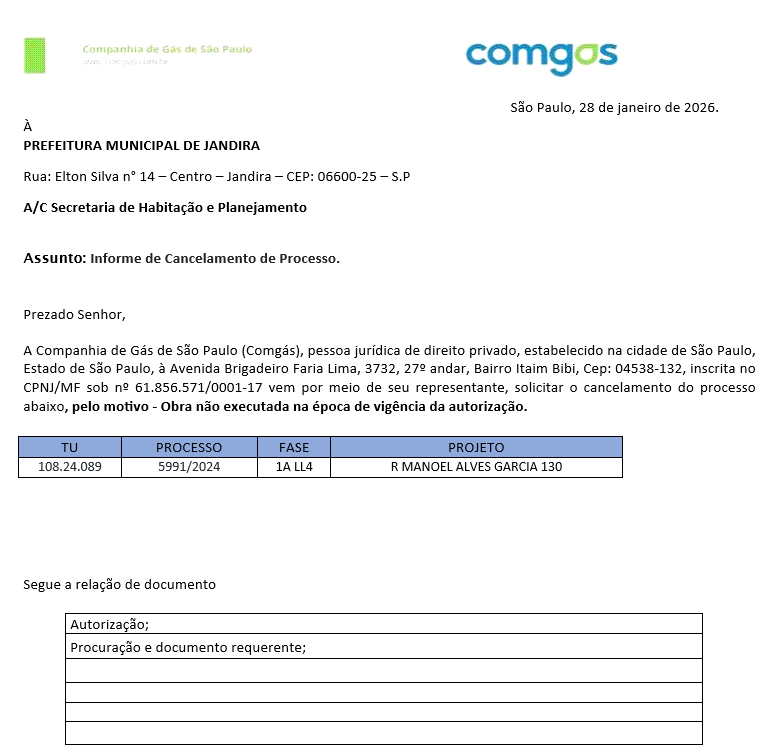
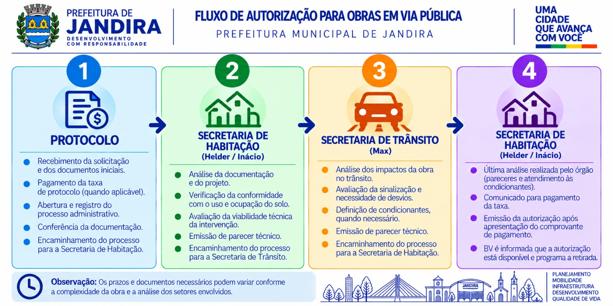

Autorizações em Jandira
Fluxo de autorizações da Prefeitura de Jandira para Rede, Ramal e Manutenção, incluindo prorrogação, comunique-se e cancelamento. Use as abas para consultar documentação e etapas de cada solicitação.
Fluxo macro — autorizações
Onde encontrar cada coisa
Contatos dos órgãos — Jandira
Contatos indicados no procedimento de autorizações do município.
Rede
Autorização para implantação de rede — protocolo físico na Prefeitura.
Documentação necessária
Passo a passo
Ramal
Autorização para implantação de ramal. Trâmite liberado via LECOM.
Documentação necessária
Passo a passo
Manutenção
Autorização para manutenção. Trâmite liberado via LECOM.
Documentação necessária
Passo a passo
Prorrogação
Verificar primeiro com o Analista se é possível seguir com a solicitação.
Documentação necessária
Passo a passo
Encerramento de Obras
Procedimento de encerramento de obras em Jandira (Contrato BI268 · Comgás · RMSP)
1. Onde e como protocolar
| Item | Informação |
|---|---|
| Órgão / setor | Prefeitura de Jandira — Secretaria de Obras (Setor de Protocolo) Rua Elton Silva, 1000 – Centro, Jandira/SP, 06600-025 |
| Contato | Inácio — Secretaria de Obras · (11) 4619-8200 |
| Forma de entrega | Protocolo físico — entregar diretamente na Secretaria de Obras (presencial) |
| Documentação impressa | Disponibilizada na EXPEDIÇÃO (CO – Ipiranga) |
| Anexar ao protocolo | Cópia da procuração BV e cópia da CNH, junto à documentação de encerramento |
| Aceite | A Secretaria de Obras assina a Carta de Requerimento; o documento assinado comprova a conclusão da obra |
2. Documentação necessária por tipo de obra
REDE — encerramento formal obrigatório (protocolo físico)
- 2 vias
- 1 via
- 1 via
- 1 via
- 1 via
- 1 via
- 1 via
Os Lecoms devem ser enviados pelo Facilita PX e, em último caso, por e-mail (enquanto o Facilita PX não é regularizado).

RAMAL — encerramento formal obrigatório
- 2 vias
- 1 via
- 1 via
Os Lecoms devem ser enviados pelo Facilita PX e, em último caso, por e-mail (enquanto o Facilita PX não é regularizado).
MANUTENÇÃO — encerramento formal obrigatório
- 2 vias
- 1 via
- 1 via
Os Lecoms devem ser enviados pelo Facilita PX e, em último caso, por e-mail (enquanto o Facilita PX não é regularizado).
3. Passo a passo
Vigência
Monitorar vencimento das autorizações e prorrogações; pedir documentos atualizados às contratadas após o vencimento.
Recebimento
Documentos chegam por Lecom, Facilita PX e EXPEDIÇÃO (CO – Ipiranga); confirmar o recebimento em cada plataforma.
Conferência
Conferir pelos critérios da IN 528: documentos obrigatórios enviados, completos, legíveis e assinados. Se OK, registrar o protocolo; se não, devolver pelo mesmo canal pedindo correção específica.
Protocolo
Entregar a documentação completa e revisada, presencialmente, na Secretaria de Obras (com procuração BV e CNH). Obter a assinatura na Carta de Requerimento e acompanhar o andamento junto à Prefeitura.
Comunique-se
Se a PM pedir correção/complementação da recomposição: enviar imediatamente à contratada por e-mail, com cópia ao eng. de construção Comgás do segmento, e com prazo; conferir a devolutiva; responder à PM por ofício de atendimento ao Comunique-se.

Conclusão
Após o protocolo, atualizar o status para “Processo Encerrado” na planilha de governança. No Fulcrum, atualizar com todas as documentações recebidas e comprovante de protocolo. No Lecom, avançar com o comprovante de protocolo. Conferir se tudo foi registrado antes de avançar o status.

Arquivamento
Arquivar toda a documentação de forma organizada. Digitalizar a Carta de Requerimento assinada pela Prefeitura e anexá-la nos sistemas.
4. Prazos
- Protocolo físico: 5 dias úteis após a entrega completa da documentação.
5. Cancelamento / arquivamento
Deve ser feito antes de qualquer necessidade de protocolo junto ao órgão público.
- Elaborar carta de cancelamento ou arquivamento, justificando o motivo, e protocolar na PM por e-mail.
- A Comgás é responsável pelo envio da justificativa (e-mail ou outro canal oficial).
- Registrar a carta nos sistemas internos BV e Comgás para evitar pendências.

6. Atenção
- Jandira não gera CCO: o encerramento se dá pelo protocolo de encerramento e pelo arquivamento da documentação.
- Ramal e Manutenção também exigem encerramento formal em Jandira.
- O protocolo é físico: a documentação deve estar completa e revisada antes da entrega, para evitar recusas ou atrasos.
- Registrar todos os envios e respostas nos sistemas internos, para auditoria.
- O procedimento vale para todas as equipes BV responsáveis por encerramento de obras.
Cancelamento
Para cancelar um processo, confirme por telefone se o procedimento deve ser digital ou presencial.
Documentação necessária
- Confirmar via
Caso haja necessidade de realizar cancelamento de algum processo, verificar por telefone qual a forma que desejam: se digital ou presencialmente.
Autorização para Obras em Via Pública
Consulte o fluxo interno para acompanhar as etapas do processo de autorização.

Informações importantes
Referências
- Integração do Contrato BI268
- Manual de Licenças e Autorizações BI268
- P-8100100 – BI268 - Plano de Gestão do Contrato COMGÁS Licenças e Autorizações
- Integra COMGÁS – IN – 434 – Autorização de obra JANDIRA
- Integra COMGÁS – IN – 528 – Encerramento de obra JANDIRA